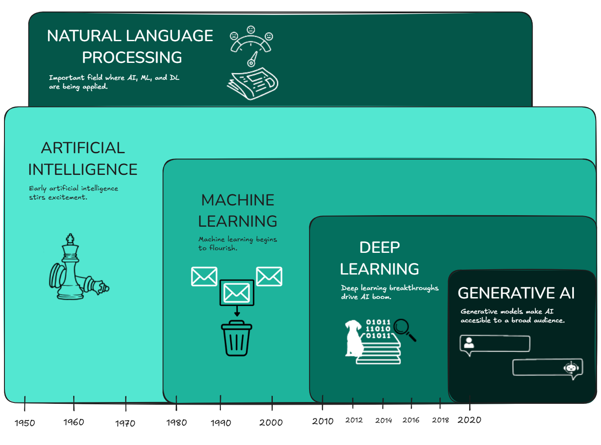
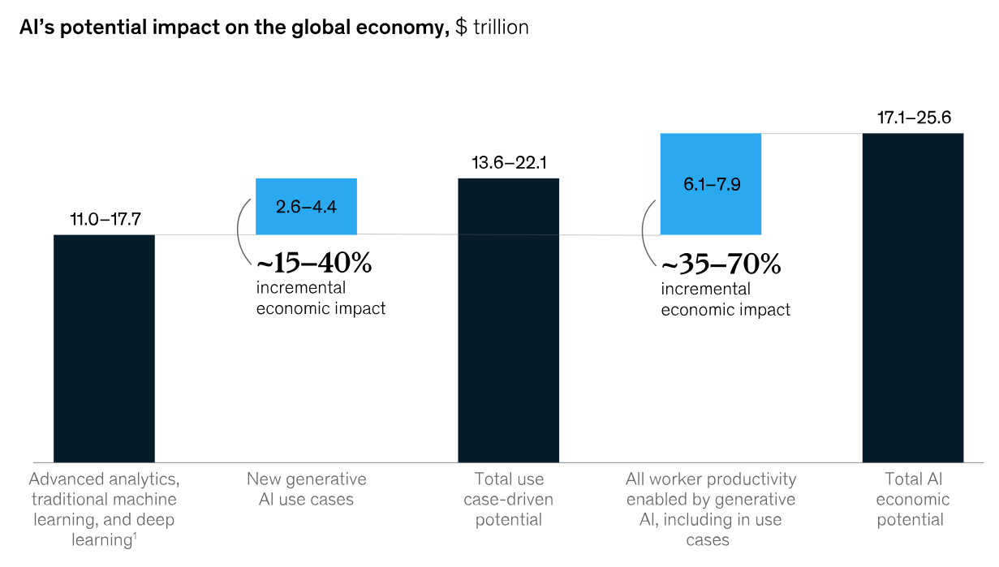
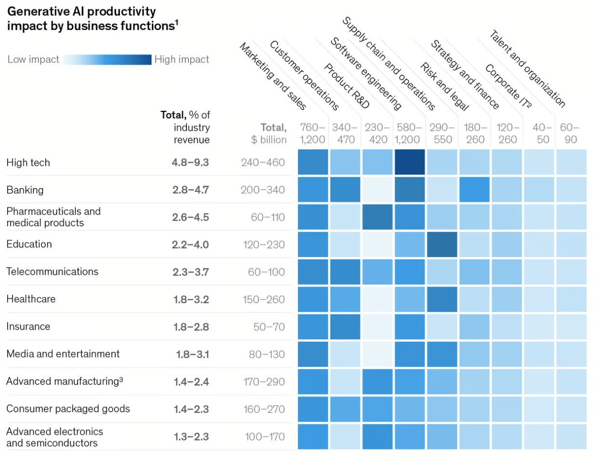
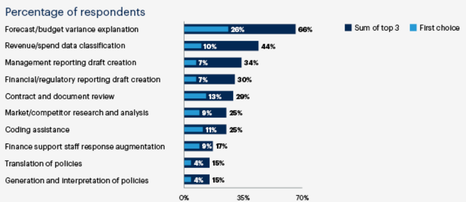
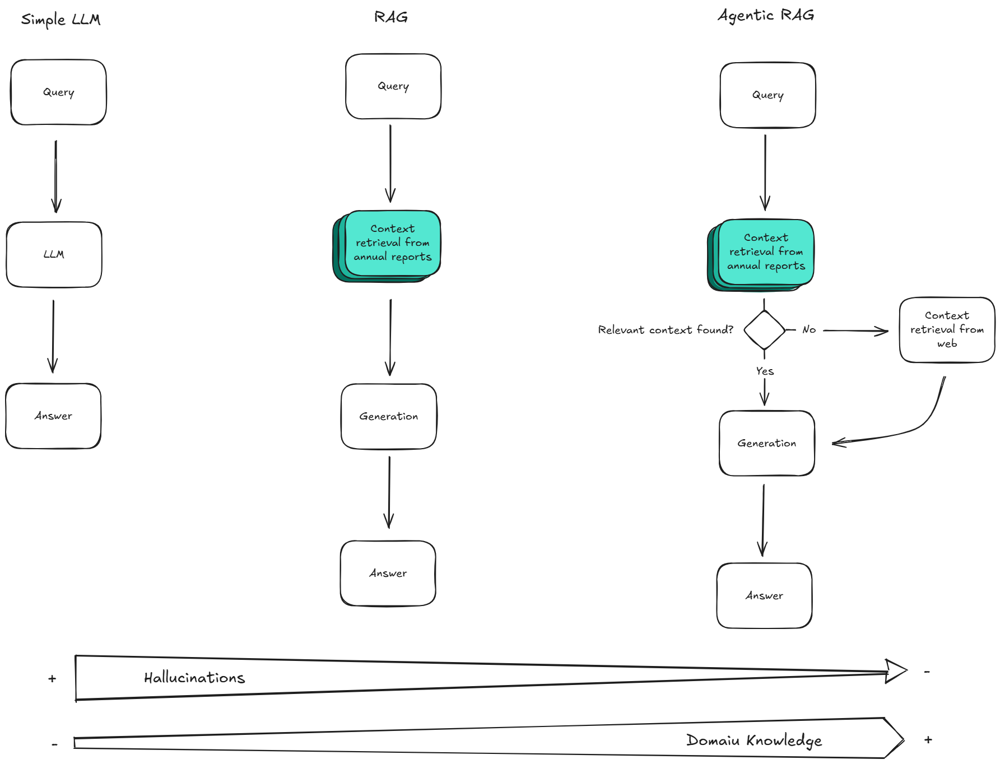
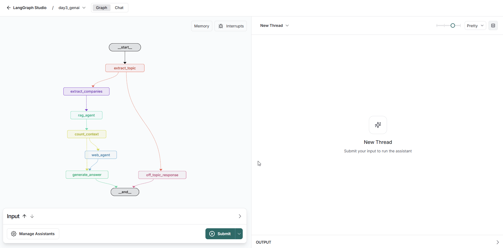

Generative AI in Risk and Finance
Developing a Risk Agent
About this Course¶
You will find all course material and setup instructions in the following repository.
What you will learn¶
- Core GenAI concepts: LLMs, embedding models, RAG, and agents.
- Hands-On with GenAI platforms: OpenAI, HuggingFace, Ollama, and Tavily.
- Practical document processing: Parse, chunk, and vectorize annual reports using LangChain and LlamaIndex to build a vector database.
- Develop agentic RAG system: Use LangGraph to explore graph fundamentals like states, routing, map-reduce, and tool calling to develop an agent capable of answering risk-related questions about DAX 40 companies.
- Blueprint for developing your own agents
What is Generative AI?¶
To understand Generative AI's place in the broader AI landscape, it's important to understand how different AI technologies relate to and build upon each other.
Generative AI is fundamentally based on deep learning methods, but it distinguishes itself by creating new content, such as language.

Image source: Author
Artificial Intelligence (AI): The Broad Umbrella
AI is the overarching field that encompasses all technologies and systems designed to simulate human intelligence. This includes tasks like reasoning, problem-solving, learning, and decision-making.
Machine Learning (ML): The Foundation
Machine learning is a subset of AI that enables systems to learn from data and improve their performance over time without being explicitly programmed. ML algorithms identify patterns in data and use these patterns to make predictions or decisions.
Deep Learning (DL): The Engine Behind Generative AI
Deep learning is a specialized branch of ML that uses artificial neural networks inspired by the human brain. These networks are particularly effective at processing large amounts of unstructured data, such as images, text, and audio.
Natural Language Processing (NLP): A Key Application Area
NLP is a field within AI focused on enabling machines to "understand", "interpret", and generate human language. It powers applications like chatbots, translation tools, and sentiment analysis.
Generative AI (GenAI):
GenAI is a specialized and creative branch of AI that leverages deep learning to generate new content. While it shares foundational techniques with deep learning, its focus on creation sets it apart. It also overlaps with NLP in language-based applications, but its scope extends beyond language to include images, videos, and more. This makes generative AI a unique and transformative technology within the broader AI ecosystem.
Application of Generative AI in Risk Management¶
GenAI holds many promises and is identified by some practitioners as the fourth industrial revolution. In the following, there are images which help to narrow down the projected impact of GenAI and its importance in the field of Risk and Finance.
Generative AI could create additional value potential above what could be unlocked by traditional AI and analytics.

Image source: McKinsey
Generative AI use cases will have different impacts on business functions across industries with Risk and Legal being an important field in Banking.

Image source: McKinsey
Most impactful GenAI uses cases in Finance and Risk have been identified and comprise tasks such as forecasting and budget planning, reporting creation and policy review.

Image source: Gardner
A GenAI PoC: Risk Agent¶
In the remaining course, we will go through a step-by-step process of developing the Risk Agent. At its core the Risk Agent utilizes a Retrieval Augmented Generation (RAG) system to provide users with up-to-date information about the risks faced by DAX 40 companies, leveraging their annual reports.
Large Language Models (LLMs), are very large deep learning models that are pre-trained on vast amounts of data. They are highly flexible as a single model can perform completely different generative tasks such as answering questions, summarizing documents, translating languages and completing sentences.
Retrieval Augmented Generation (RAG) is a technique for improving the quality of LLM-generated responses by grounding the model on external sources of knowledge. Relevant external knowledge is retrieved from a knowledge base and used to augment the model's generation process. This approach can help mitigate the model's tendency to hallucinate or produce incorrect information, as it provides a more reliable source of context for the generation task.
Additionally, we will enhance this system with AI agents that can independently decide which reports to retrieve based on user queries, even searching the web when necessary.
In general terms, agents refer to artificial intelligence systems that can act with a higher degree of autonomy than traditional AI solutions. Designed to function independently, these systems can perform tasks and make decisions without continuous human intervention or the need of predefined, hard-coded guidance.
A RAG system enhances an LLM's knowledge with up-to-date domain information from a document base, while an agentic RAG system allows it to independently decide which information sources to retrieve.
Image source: Illustration Author
Developing a Mulit-Document Risk Agent¶
Moving on, we will primarily work with LlamaIndex and LangChain which are both leading Python frameworks for building LLM-powered workflows.
Image source: Superwise
Build a document vector store¶
We begin by creating a vector store, a specialized database that manages information as mathematical vectors, which represent the meaning of different sections of companies' annual reports. This vector store is crucial for the RAG system as it enables the retrieval of relevant, domain-specific information that enhances user queries, allowing the chat system to provide accurate and up-to-date responses that the underlying language model alone may struggle to deliver.
In the first step, we load the HuggingFace access token into our project's environment to gain access to various open-source embedding models that convert annual reports into context-aware vector representations.
An embedding model is a mathematical framework that transforms data, such as words or phrases, into vector representations that capture their contextual meanings.
import os
from dotenv import load_dotenv
# Load environment variables from .env file
load_dotenv()
# Access the API key
huggingface_api_key = os.getenv("HUGGINGFACE_API_KEY")
Parse documents¶
The original annual reports for all DAX 40 companies from 2023 can be found in data/raw/reports/. They are the starting point to build our
vector store.
reports = os.listdir('data/raw/reports/')
print(*reports[:3], '...', *reports[-3:], sep=',\n')
adidas_2023.pdf, airbus_2023.pdf, allianz_2023.pdf, ..., volkswagen_2023.pdf, vonovia_2023.pdf, zalando_2023.pdf
To read the annual reports, we utilize SimpleDirectoryReader, which efficiently loads and parses local files, automatically selecting the
appropriate reader based on file format, specifically for the .pdf format of the reports. We will begin with the 2023 annual report of Adidas and apply the
same generic preprocessing steps to the annual reports of all other DAX 40 companies at the end of this section.
from llama_index.core import SimpleDirectoryReader
documents = SimpleDirectoryReader(
input_files=['data/raw/reports/adidas_2023.pdf']).load_data()
print(f"In total {len(documents)} Document objects have been loaded.")
In total 321 Document objects have been loaded.
As you can see, SimpleDirectoryReader returns a list of 321 Document objects, with each element representing a single page from
the previously loaded annual report.
Next, we utilize the custom function display_document_with_image_side_by_side() to visually compare the text parsed by
SimpleDirectoryReader with the original document. This allows for an effective side-by-side evaluation of the extracted content.
from util import display_document_with_image_side_by_side
display_document_with_image_side_by_side(
document=documents[165],
image_path='img/annual_report.png'
)
1 2 3 4 5
T O O U R SHA REHO L D ERS GRO U P MAN A GEMEN T REP O RT –
O U R CO MPA N Y
GRO U P MAN A GEMEN T REP O RT –
F I N A N CI AL REVI EW
CO N SO L I DA T ED FI N AN CI A L
ST A T EMEN T S
A D D I T I ON A L I N FO RMA T I ON
166
A N N U A L R E P O R T 2 0 2 3
Risk and Opportunity Report
In order to remain competitive and ensure sustainable success, adidas consciously takes risks and
continuously explores and develops opportunities. Our risk and opportunity management principles and
system provide the framework for our company to conduct business in a well-controlled environment.
Risk and opportunity management principles
The key objective of the risk and opportunity management is to support business success and protect the
company as a going concern through an opportunity-focused but risk-aware decision-making framework.
Our Enterprise Risk Management Policy outlines the principles, processes, tools, risk areas, key
responsibilities, reporting requirements, and communication timelines within our company. Risk and
opportunity management is a company-wide activity that utilizes key insights from the members of the
Executive Board as well as from global and local business units and functions. We define risk as the
potential occurrence of an external or internal event (or series of events) that may negatively impact our
ability to achieve the company’s business objectives or financial goals. Opportunity is defined as the
potential occurrence of an external or internal event (or series of events) that can positively impact the
company’s ability to achieve its business objectives or financial goals.
Risk and opportunity management system
The Executive Board has overall responsibility for establishing a risk and opportunity management system
that ensures comprehensive and consistent management of all relevant risks and opportunities. The
Enterprise Risk Management department governs, operates, and develops the company’s risk and
opportunity management system and is the owner of the centrally managed risk and opportunity
management process on behalf of the Executive Board. The Supervisory Board is responsible for
monitoring the effectiveness of the risk management system. These duties are undertaken by the
Supervisory Board’s Audit Committee. Working independently of all other functions of the organization, the
Internal Audit department provides objective assurance to the Executive Board and the Audit Committee
regarding the adequacy and effectiveness of the company’s risk and opportunity management system on a
regular basis. In addition, the Internal Audit department includes an assessment of the effectiveness of
risk management processes and compliance with the company’s Enterprise Risk Management Policy as
part of its regular auditing activities with selected adidas subsidiaries or functions each year.
Our risk and opportunity management system is based on frameworks for enterprise risk management
and internal controls developed and published by the Committee of Sponsoring Organizations of the
Treadway Commission (COSO). Additionally, we have adapted our risk and opportunity management
system to more appropriately reflect the structure as well as the culture of the company. This system
focuses on the identification, evaluation, handling, systematic reporting, and monitoring of risks and
opportunities. Furthermore, we use a quantitative concept for risk capacity and risk appetite. Risk capacity
is a liquidity-based measure and represents the maximum level of risk adidas AG can take before being
threatened with insolvency. Risk appetite refers to the maximum level of risk the company is willing to
take and is linked to the company's liquidity targets.
When using the text_resource in the Risk Agent, we need to remove the repetitive header information from each page, as it complicates the
content, and we only want to focus on the pages that contain information about the companies' 'Risk and Opportunity.' Ultimately, we aim to merge all
relevant pages of an annual report into a single Document object to ensure that paragraphs split across two pages are
processed together.
pre_process_dict = {
"adidas": {
"pages": range(165, 187, 1),
"string_to_remove": """1 2 3 4 5 \nT O O U R SHA REHO L D ERS GRO U P MAN A GEMEN T
REP O RT – \nO U R CO MPA N Y \nGRO U P MAN A GEMEN T REP O RT – \nF I N A N CI AL
REVI EW \nCO N SO L I DA T ED FI N AN CI A L \nST A T EMEN T S \n
A D D I T I ON A L I N FO RMA T I ON \n \n\\d{1,3} \n \n
\n A N N U A L R E P O R T 2 0 2 3""",
}
}
import re
from llama_index.core import Document
pages = pre_process_dict["adidas"].get("pages")
string_to_remove = pre_process_dict["adidas"].get("string_to_remove")
overall_text = ""
for page in pages:
document = documents[page]
text = document.text
text = re.sub(string_to_remove, "", text)
overall_text = "\n".join([overall_text, text])
report = Document(
text=overall_text,
metadata={'company': "adidas", 'year': 2023})
Chunk documents¶
In RAG systems, chunking is the process of dividing a large document into smaller, manageable pieces or "chunks" for easier storage and processing. These chunks are indexed and utilized during the retrieval phase to supply relevant information to the LLM, enhancing its performance and contextual understanding.
Chunking is essential in RAG for several reasons:
- Efficient Retrieval: By dividing large documents into smaller chunks, the system can quickly identify and retrieve only the most relevant pieces of information, rather than processing an entire document.
- Improved Accuracy: Smaller chunks help preserve context and ensure that the retrieved information is more focused and relevant to the user's query. This reduces the risk of irrelevant or inaccurate responses.
- Token Limits: LLMs have a maximum number of tokens that they can process at one time when generating responses. This is referred to as the model's context window size. Chunking documents into smaller parts allows to respect this context window size.
We use the SentenceSplitter class which splits the document into chunks with a preference for complete sentences.
from llama_index.core.node_parser import SentenceSplitter
splitter = SentenceSplitter(
chunk_size=256,
chunk_overlap=20)
chunks = splitter.get_nodes_from_documents([report])
len(chunks)
67
The annual report has been split into 67 chunks whereas each chunk has at most 256 tokens.
for index, node in enumerate(chunks[:3]):
print(f"Node {index}: {re.sub("\n", "", node.text[:200])} ...\n")
Node 0: Risk and Opportunity Report In order to remain competitive and ensure sustainable success, adidas consciously takes risks and continuously explores and develops opportunities. Our risk and opportuni ... Node 1: Risk and opportunity management system The Executive Board has overall responsibility for establishing a risk and opportunity management system that ensures comprehensive and consistent management o ... Node 2: Our risk and opportunity management system is based on frameworks for enterprise risk management and internal controls developed and published by the Committee of Sponsoring Organizations of the Tre ...
Vectorize chunks¶
Once the documents have been chunked into smaller subsets, the next step is to convert them into vector representations.
We utilize the sentence-transformer as the embedding model for vectorizing the chunks of the annual reports. The version we are using has a context window size of 256 tokens, which aligns with the token size of the chunks created earlier, and it is hosted on HuggingFace, where we leverage their free inference API.
from langchain_huggingface import HuggingFaceEndpointEmbeddings
embed_model = HuggingFaceEndpointEmbeddings(
model="sentence-transformers/all-MiniLM-L6-v2",
huggingfacehub_api_token=huggingface_api_key,
)
embedding = embed_model.embed_documents(texts=[chunks[0].text])
len(embedding[0])
384
The embedding model translates the text into a 1x384 vector.
Typically, embeddings are organized within an index optimized for similarity search, and we use Faiss, a library developed by Meta AI, for efficient similarity search and clustering of dense vectors, particularly suited for large datasets and high-dimensional vectors. During query time, Faiss retrieves the top k embeddings along with the corresponding text chunks, providing context information for the LLM to accurately respond to user queries.
We set up a IndexFlatL2 which means the index stores the full vectors (i.e. without compressing or clustering the index) and performs exhaustive
search using Euclidean distance (L2). We save the generated Faiss index in memory using InMemoryDocstore.
import faiss
from langchain_community.docstore.in_memory import InMemoryDocstore
from langchain_community.vectorstores import FAISS
from util import convert_llama_to_langchain
index = faiss.IndexFlatL2(len(embed_model.embed_query("hello world")))
vector_store = FAISS(
embedding_function=embed_model,
index=index,
docstore=InMemoryDocstore(),
index_to_docstore_id={},
)
vector_store.add_documents(
documents=[convert_llama_to_langchain(chunk) for chunk in chunks])
We can now send a query to the vector store which retrieves the top k most relevant chunks from the index.
context = vector_store.search(
query="What is Adidas doing to mitigate climate change related risks?",
search_type="similarity",
k=3)
for index, document in enumerate(context):
print(f"Document {index}: {re.sub("\n", "", document.page_content[:200])} ...\n")
Document 0: This framework applies to all adidas businesses worldwide and also sets our expectations of third-party business partners for managing personal information for or on behalf of adidas. Our Global Pr ... Document 1: To reduce supplier dependency, the company follows a strategy of diversification. In this context, adidas works with a broad network of suppliers in different countries and, for the vast majority of ... Document 2: Currency risks are a direct result of multi-currency cash flows within the company, in particular the mismatch of the currencies required for sourcing our products versus the denominations of our sa ...
Now, we will apply the steps demonstrated above to the annual reports of all DAX 40 companies. This process will ensure that we efficiently extract and analyze the relevant information from each report.
from util import parse_document, chunk_document, vectorize_chunks, pre_process_dict, convert_llama_to_langchain
from tqdm.notebook import tqdm
import asyncio
import nest_asyncio
nest_asyncio.apply()
vector_store = None
for report in tqdm(reports):
company = report.split('_')[0]
year = int(report.split('_')[1].split('.')[0])
document = parse_document(
f'data/raw/reports/{report}',
pre_process_dict.get(company),
company=company,
year=year)
chunks = chunk_document(document, chunk_size=256, chunk_overlap=20)
chunks = [convert_llama_to_langchain(chunk) for chunk in chunks]
# Check if vector_store exists; if not, create it
if vector_store is None:
vector_store = asyncio.run(vectorize_chunks(chunks, inference_api=False))
tqdm.write(f"Vector store created for {company} {year}.")
else:
# Add documents to the vector store
await vector_store.aadd_documents(chunks)
tqdm.write(f"Vector store updated for {company} {year}.")
With the filter argument we can now reduce the search to a specific DAX 40 company or alternatively query the entire vector store without setting any metadata filter.
# First filter by company, then conduct similarity search
vector_store._similarity_search_with_relevance_scores(
query="climate related risk",
filter={"company": "bmw"},
search_type="similarity_score_threshold",
k=3)
# Similarity search on the entire vector store
vector_store._similarity_search_with_relevance_scores(
query="climate related risk",
search_type="similarity_score_threshold",
k=3)
We have now developed the core element of the RAG part of our Risk Agent, i.e. the vector store holding context-aware vectors of the DAX 40 companies' annual reports.
In the next section, we make use of the vector store by integrating it into an agentic workflow which is capable to decide whether to query the vector store or search on the web to provide a meaningful answer to any user query.
Extend to a graph-based agent¶
A graph-based agent is a type of AI system that uses a structured graph to decide how to handle user queries. Think of the graph as a flowchart that connects different tools or actions the agent can take. Each node in the graph represents a specific tool or function (like searching a vector store or retrieving information from the web), and the edges between nodes define how the agent decides which tool to use based on the user's question.
For example, if a user asks, "What risks are DAX 40 companies facing related to cybersecurity?", the graph-based agent will analyze the query and decide:
- Should it search the vector store, i.e. the annual reports, for relevant information?
- Or should it search the web for the latest cybersecurity risks if the vector store doesn't have enough context?
The graph helps the agent orchestrate (or organize) the query and send it to the "right" tool to get the best answer.
We use LangGraph, a framework that helps you building graph-based agents. It allows you to define the structure of the graph and specify how the agent should behave when it receives a query.

Image source: Langchain AI
LangGraph makes it easier to:
- Connect Tools: You can connect your vector store, web search, or any other tools you want the agent to use.
- Define Logic: You can define rules or logic for how the agent decides which tool to use. For example, if the query is about risks of a specific DAX 40 mentioned in annual reports, the agent should prioritize the vector store. If the query is about recent risks not covered in the reports, it should search the web.
First, we load the required API keys:
- HuggingFace for vectorizing the user query,
- Tavily as web search tool,
- and optionally OpenAI if you want to use a GPT model as LLM.
If you do not want to use OpenAI's pay-as-you-go LLMs, the default will be Meta's open source and free of charge model Llama 3.1. Note however, that you need to have installed Ollama on your local machine to work with the free Llama models.
import os
from dotenv import load_dotenv
# Load environment variables from .env file
# load_dotenv()
# Access the API keys
huggingface_api_key = os.getenv("HUGGINGFACE_API_KEY")
tavily_api_key = os.getenv("TAVILY_API_KEY")
# Optional, if you want to experiment with OpenAI models
openai_api_key = os.getenv("OPENAI_API_KEY", None)
Next, we instantiate the LLM model via the custom function get_llm_model.
# LLM
from util import get_llm_model
llm = get_llm_model(llm_type="ollama", model_name="llama3.1:8b") # If you want to experiment with OpenAI models change llm_type to "openai" and model_name to "gpt-4o-mini", for example.
We can then invoke the LLM directly by sending a query to it. Note that the answer generated in this way is based on the LLMs knowledge gained during training. There is no additional context provided to the LLM which makes it likely that the generated answer contains hallucinations.
answer = llm.invoke(
input="""What is the impact of climate change on the
business model of Adidas?""")
print(answer.content[:200], "...")
Climate change has a significant impact on the business model of companies like Adidas, influencing various aspects of their operations, strategy, and market positioning. Here are some key areas where ...
Next, we instantiate a Tavily object which will be used to retrieve relevant context from the web.
# Web search tool
from langchain_community.tools.tavily_search import TavilySearchResults
tavily_search = TavilySearchResults(max_results=2)
Similar to invoking the LLM, one can invoke the tavily_search object and retrieve sources from the web that are relevant to the query.
web_context = tavily_search.invoke(
input="""What is the impact of climate change on the
business model of Adidas?""")
print(f"""Source: {web_context[1]['url']}
---
Content: {web_context[1]['content'][58:1000]} ...""")
Source: https://www.hermes-investment.com/wp-content/uploads/2022/02/eos-adidas-case-study-february-2022-1.pdf --- Content: eded to address climate change and environmental impacts of apparel and footwear. We will continue ...
Before we build the graph, we need to introduce the concepts of state and state schema which are fundamental to how the system operates.
You can think of the state of a graph as the "data carrier" of the graph at that holds all the necessary information (e.g., user query, extracted topics, identified companies, retrieved relevant documents, and final response) as the system transitions from one node to another. The state evolves as the system progresses through the workflow, with each node potentially modifying or adding to the state.
The state schema, on the other hand, defines the structure of the state, including the types of nodes and edges, their properties, and how they relate to each other.
We use Pydantic to define the following three classes Topic, Company, and Companies which will determine
the state schema of our graph.
from typing import Optional, List
from pydantic import BaseModel, Field
class Topic(BaseModel):
dax_40_related: bool = Field(
description="Whether the query is related to DAX 40 companies.")
topic: str = Field(description="Topic of the query.")
class Company(BaseModel):
name: str = Field(description="Name of DAX 40 company.")
class Companies(BaseModel):
companies: Optional[List[Company]] = Field(
description="List of DAX 40 companies.")
There are two advantages of working with Pydantic
- Data Validation and Type Safety
Pydantic enforces strict type checking, ensuring that data conforms to expected structures and preventing runtime errors. For example, theTopicclass verifies that the LLM's output includes a boolean and a string with the correct types, while theCompaniesclass checks that the list of companies is eitherNoneor a valid list ofCompanyobjects.
- Structured Communication Between Agents
Pydantic ensures consistent and interpretable data exchange. The Topic class organizes outputs from the topic extraction agent for downstream processing, while the Companies class structures the output from the company extraction agent, ensuring that the RAG agent receives a well-defined list of companies to query. This structured approach enhances the reliability of the RAG system.
We then define two state classes OverallState which inherits from MessageState. This state class is shared across all nodes in the
graph.
import operator
from typing import Annotated, TypedDict
from langgraph.graph import MessagesState
class OverallState(MessagesState):
topic: Topic # topic of the user query including a boolean flag if it is related to DAX 40 companies and the description of the topic (see above)
companies: Companies # list of DAX 40 companies that are mentioned in the user query
context: Annotated[List[str], operator.add] # list of contextual information for each company retrieved from the vector store or the web
context_amount: Annotated[List[int], operator.add] # list of context retrieved for each company (number of documents)
context_count: int # overall number of context information retrieved across all companies
final_answer: str # final answer to the user query generated by the LLM
The second state class AnnualReportState is hidden. It stores data that is required only for the RAG part in the system and does not need to
be shared globally across the graph.
class AnnualReportState(TypedDict):
company: Company # Company for which the context is retrieved from its annual report
context_report: Annotated[List[str], operator.add] # Context retrieved from the annual report
The operator.add function serves as a state reducer, which updates the graph state by appending new information to the
existing data. In contrast, the default reducer simply replaces the existing information with the new input, such as when a newly generated topic overwrites
the previous one.
Extract topic¶
In the first node of your agentic system, extract_topic_node, we use the LLM to identify the topic of the user query and
check if it is related to DAX 40 companies. If the query is not related to DAX 40 companies, we route the system to a standardized off-topic response,
off_topic_response_node. If the question is related to DAX 40 companies we route the system to the next node where we use the
LLM to identify the companies mentioned in the user query. The routing logic is defined in the general_router function.
Define system prompt instructing the LLM to extract topic from the query if the query is DAX 40 related.
topic_extraction_instruction = """You are part of an AI agent
designed to answer questions about the risks DAX 40 companies
are facing.
Your task is to judge whether the following user query is a
question concerned about DAX 40 companies or not.
Note that the user query may not explicitly mention any DAX 40 companies,
but it may still be related to them. If it mentions any DAX 40 companies,
it is for sure a DAX 40 related question.
Questions that refer to any type of risks that corporations
could face should be flagged as DAX 40 related.
If the user query is related to DAX 40 companies, you should
extract the topic of the question. If the user query is not
related to DAX 40 companies, please return nothing.
The topic should be a short phrase that summarizes the main subject
of the question. Please make sure to retain specific keywords that
are relevant to the topic.
This is the user query from which you should extract the topic: {message}.
Company names or the term 'DAX 40' should not be included in the topic.
"""
Define node which extracts topic.
from langchain_core.messages import HumanMessage, SystemMessage
def extract_topic_node(state: OverallState):
messages = state.get('messages')
last_message = messages[-1].content
# Enforce structured output
structured_llm = llm.with_structured_output(Topic)
# Create a system message
system_message = topic_extraction_instruction.format(message=last_message)
# Extract topic
topic = structured_llm.invoke(
[SystemMessage(content=system_message)]+
[HumanMessage(
content="""Please judge if the user query is related to
DAX 40 companies or not.
If it is, please extract the topic of the query.""")])
return {'topic': topic}
Define router to route to next node:
extract_companies_nodeif query is on topicoff_topic_response_nodeif query is off topic
def general_router(state: OverallState):
topic = state.get('topic')
dax_40_related = topic.dax_40_related
# Check if the query is related to DAX 40 companies
if dax_40_related:
return "on-topic"
else:
return "off-topic"
def off_topic_response_node(state: OverallState):
final_answer = """Your query is not concerned about DAX 40 companies
and therefore off topic within the context of this agent."""
return {"final_answer": final_answer}
Extract companies¶
The next step in our system, extract_companies_node, extracts the concrete companies mentioned in the user
query and maps them against a list of harmonized company names defined in the following dax_40 list.
dax_40 = ['adidas', 'airbus', 'allianz', 'basf', 'bayer', 'beiersdorf',
'bmw', 'brenntag', 'commerzbank', 'continental', 'daimler-truck',
'deutsche-bank', 'deutsche-börse', 'deutsche-post',
'deutsche telekom', 'eon', 'fresenius', 'fresenius-medical-care',
'hannover-rück', 'heidelberg-materials', 'henkel',
'infineon-technologies', 'mercedes-benz', 'merck', 'mtu',
'münchener-rück', 'porsche', 'qiagen', 'rheinmetall', 'rwe',
'sap', 'sartorius', 'siemens', 'siemens-energy',
'siemens-healthineers', 'symrise', 'volkswagen', 'vonovia',
'zalando']
If the user query does not mention any specific DAX 40 company, the system will answer the query for all DAX 40 companies.
This logic is defined in the rag_router which sends extracted companies/all DAX 40 companies to the vector store from which relevant context is
retrieved.
It is noteworthy that routing the extracted companies to the vector store is a map-reduce operation which means that the company names are
not send to the vector store sequentially but in parallel. This becomes possible with langraph's Send API.
Instruct the LLM to identify and extract any company names from the query.
company_extraction_instruction = """You are tasked with analyzing whether the following
user query relates to any specific DAX 40 companies: {message}.
If you find specific DAX 40 companies mentioned in the user query,
map them to the ones mentioned in the following list: {dax_40}.
It may well be that the user query is a more generic question
that is not related to any specific company.
"""
Define node wich extracts the company names.
def extract_companies_node(state: OverallState, dax_40: list = dax_40):
messages = state.get('messages')
last_message = messages[-1].content
dax_40 = ', '.join(dax_40)
structured_llm = llm.with_structured_output(Companies)
system_message = company_extraction_instruction.format(
message=last_message, dax_40=dax_40)
companies = structured_llm.invoke(
[SystemMessage(content=system_message)]+
[HumanMessage(
content="""Extract the set of DAX 40 companies
if there are mentioned any. Otherwise return nothing.""")])
return {'companies': companies.companies}
Route extracted companies to the rag_agent_node in parallel.
from langgraph.types import Send
def rag_router(state: OverallState, dax_40: list = dax_40):
companies = state.get('companies', None)
topic = state.get('topic')
# Check if any companies were extracted
if companies is not None:
return [Send(
"rag_agent",
{"company": c, "topic": topic.topic}) for c in companies]
else:
return [Send(
"rag_agent",
{"company": Company(name=c), "topic": topic.topic}) for c in dax_40]
Retrieve context¶
The next step is the core component in our agentic RAG system. For each extracted company the rag_agent_node
is triggered which searches the vector store for relevant context chunks which help to answer the user query. The similarity search is
conducted for each company in parallel with a metadata filter on the respective company name.
If no relevant context for the companies is found, the query is sent to the web_agent_node through the
web_router to search the web for pertinent information. This web search serves as a fallback when annual company reports do
not provide sufficient context.
Instruct LLM to generate a response based on the context retrieved for specific company.
single_answer_generation_instruction = """Based on the following context for
{company}, generate an answer to the topic '{topic}': \n\n {context}.
If the context does not provide enough information, please answer that
the annual report of {company} does not provide any information
about the topic '{topic}'.
"""
Define node which retrieves company-specific context from vector store.
import numpy as np
def rag_agent_node(
state: AnnualReportState,
vector_store: FAISS = vector_store):
company = state.get('company')
topic = state.get('topic')
context_report = vector_store.similarity_search(
query=topic,
k=2,
filter={"company": company.name})
context_amount = len(context_report)
if context_amount == 0:
answer = f"""The annual report of {company.name} does not provide any
information about the topic '{topic}'."""
else:
system_message = single_answer_generation_instruction.format(
company=company.name,
topic=topic,
context='\n\n---\n\n'.join(
[node.page_content for node in context_report]))
answer = llm.invoke(system_message).content
return {"context_report": context_report, "context": [answer],
"context_amount": [context_amount]}
Count the number of context chunks retrieved from the vector store across all companies.
If no context chunks were retrieved route to web_agent_node.
def count_context_node(state: OverallState):
context_amount = state.get('context_amount')
state['context_count'] = np.sum(context_amount)
return {"context_count": state['context_count']}
def web_router(state: OverallState):
context_count = state.get('context_count')
if context_count == 0:
return "relevant-context-not-found"
else:
return "relevant-context-found"
Define node that retrieves context from web.
def web_agent_node(state: OverallState):
messages = state.get('messages')
last_message = messages[-1].content
search_docs = tavily_search.invoke(last_message)
formatted_search_docs = "\n\n---\n\n".join(
[
f'<Document href="{doc["url"]}">\n{doc["content"]}\n</Document>'
for doc in search_docs
]
)
return {"context": [formatted_search_docs]}
Generate answer¶
The final step of the Risk Agent utilizes context from annual reports or web sources to generate a comprehensive answer to the user query across all companies, which is then presented to the user.
Instruct LLM to generate an overall response.
final_answer_generation_instruction = """You are tasked to provide a concise
answer to the following query: {message}.
To respond to the user, you are supposed to use the following contextual
information: {context}.
If you find that the context contains repetitive information, please
summarize it accordingly.
If the context mentions DAX 40 companies, please make sure to explicitly
include them in your answer.
"""
Define the node which generates the final answer by reducing the company-specific information to a single string.
def generate_answer_node(state: OverallState):
messages = state.get('messages')
last_message = messages[-1].content
context = state.get('context', None)
system_message = final_answer_generation_instruction.format(
message=last_message,
context='\n\n---\n\n'.join(context))
final_answer = llm.invoke(system_message).content
# Return the company-specific answer
return {"final_answer": final_answer}
Build the graph¶
Finally, we build the graph and add all nodes and edges defined above.
from langgraph.graph import START, END, StateGraph
builder = StateGraph(OverallState)
builder.add_node("extract_topic", extract_topic_node)
builder.add_node("off_topic_response", off_topic_response_node)
builder.add_node("extract_companies", extract_companies_node)
builder.add_node("rag_agent", rag_agent_node)
builder.add_node("count_context", count_context_node)
builder.add_node("web_agent", web_agent_node)
builder.add_node("generate_answer", generate_answer_node)
builder.add_edge(START, "extract_topic")
builder.add_conditional_edges("extract_topic", general_router, {
"on-topic": "extract_companies", "off-topic": "off_topic_response"})
builder.add_conditional_edges("extract_companies", rag_router, {
"map-reduce": "rag_agent"})
builder.add_edge("rag_agent", "count_context")
builder.add_conditional_edges("count_context", web_router, {
"relevant-context-found": "generate_answer",
"relevant-context-not-found": "web_agent"})
builder.add_edge("web_agent", "generate_answer")
builder.add_edge("generate_answer", END)
builder.add_edge("off_topic_response", END)
graph = builder.compile()
Displaying the graph gives you a visual representation of the flow of the agent.
from IPython.display import Image, display
display(Image(graph.get_graph(xray=1).draw_mermaid_png(
frontmatter_config={
"config": {
"layout": "dagre",
"look": "handDrawn"}}
)))
![No description has been provided for this image]()
We can now stream the graph to propagate the user query through the graph-based agent in oder to generate a final answer.
from util import print_graph_propagation
# Off-topic query
query = "How is the weather in New York?"
print_graph_propagation(graph, query)
User query: How is the weather in New York?
-----------------
Graph events:
1. Node: extract_topic
State: topic
Content: dax_40_related=False topic='' ...
2. Node: off_topic_response
State: final_answer
Content: Your query is not concerned about DAX 40 companies
and therefore off topic within the context of this agent. ...
-----------------
Answer: Your query is not concerned about DAX 40 companies
and therefore off topic within the context of this agent. ...
# Query with specific DAX 40 companies
query = "What are the climate-related risks for Adidas and BMW?"
print_graph_propagation(graph, query)
User query: What are the climate-related risks for Adidas and BMW?
-----------------
Graph events:
1. Node: extract_topic
State: topic
Content: dax_40_related=True topic='climate-related risks' ...
2. Node: extract_companies
State: companies
Content: [Company(name='adidas'), Company(name='bmw')] ...
3. Node: rag_agent
State: context_report
Content: [Document(id='07512924-8d4b-40ef-b846-9dfa66092443', metadata={'company': 'adidas', 'year': 2023}, page_content='Climate scenario analysis confirmed our previous findings that the overall global green ...
4. Node: rag_agent
State: context_report
Content: [Document(id='98eaf969-33dd-4ac8-b975-662454b3b3ca', metadata={'company': 'bmw', 'year': 2023}, page_content='Moreover, oth er \noverarching topics are monitored by means of regular media \nanalysis. ...
5. Node: count_context
State: context_count
Content: 3 ...
6. Node: generate_answer
State: final_answer
Content: Adidas and BMW, both DAX 40 companies, face climate-related risks that are categorized using the Task Force on Climate-Related Financial Disclosures (TCFD) framework. For Adidas, the primary concern i ...
-----------------
Answer: Adidas and BMW, both DAX 40 companies, face climate-related risks that are categorized using the Task Force on Climate-Related Financial Disclosures (TCFD) framework. For Adidas, the primary concern i ...
# DAX 40 related query but without mentioning any specific company
query = "Which risks do corporations face due to climate change?"
print_graph_propagation(graph, query)
User query: Which risks do corporations face due to climate change?
-----------------
Graph events:
1. Node: extract_topic
State: topic
Content: dax_40_related=True topic='risks due to climate change' ...
2. Node: extract_companies
State: companies
Content: None ...
3. Node: rag_agent
State: context_report
Content: [] ...
4. Node: rag_agent
State: context_report
Content: [] ...
5. Node: rag_agent
State: context_report
Content: [] ...
6. Node: rag_agent
State: context_report
Content: [] ...
7. Node: rag_agent
State: context_report
Content: [] ...
8. Node: rag_agent
State: context_report
Content: [] ...
9. Node: rag_agent
State: context_report
Content: [] ...
10. Node: rag_agent
State: context_report
Content: [] ...
11. Node: rag_agent
State: context_report
Content: [] ...
12. Node: rag_agent
State: context_report
Content: [] ...
13. Node: rag_agent
State: context_report
Content: [] ...
14. Node: rag_agent
State: context_report
Content: [] ...
15. Node: rag_agent
State: context_report
Content: [] ...
16. Node: rag_agent
State: context_report
Content: [] ...
17. Node: rag_agent
State: context_report
Content: [] ...
18. Node: rag_agent
State: context_report
Content: [] ...
19. Node: rag_agent
State: context_report
Content: [] ...
20. Node: rag_agent
State: context_report
Content: [] ...
21. Node: rag_agent
State: context_report
Content: [] ...
22. Node: rag_agent
State: context_report
Content: [] ...
23. Node: rag_agent
State: context_report
Content: [] ...
24. Node: rag_agent
State: context_report
Content: [] ...
25. Node: rag_agent
State: context_report
Content: [] ...
26. Node: rag_agent
State: context_report
Content: [] ...
27. Node: rag_agent
State: context_report
Content: [] ...
28. Node: rag_agent
State: context_report
Content: [] ...
29. Node: rag_agent
State: context_report
Content: [Document(id='74ee6118-bbc5-48c0-9a08-b2f46cc729a0', metadata={'company': 'heidelberg-materials', 'year': 2023}, page_content='Climate risks\nAccording\u2003to\u2003th e\u2003de finition\u2003is sued\ ...
30. Node: rag_agent
State: context_report
Content: [] ...
31. Node: rag_agent
State: context_report
Content: [Document(id='fd40cc22-5b82-4da0-8e91-ba92132de1ff', metadata={'company': 'merck', 'year': 2023}, page_content='For example, physical climate risks can have an accounting impact in the form of the nec ...
32. Node: rag_agent
State: context_report
Content: [Document(id='98eaf969-33dd-4ac8-b975-662454b3b3ca', metadata={'company': 'bmw', 'year': 2023}, page_content='Moreover, oth er \noverarching topics are monitored by means of regular media \nanalysis. ...
33. Node: rag_agent
State: context_report
Content: [Document(id='c932e3b7-b53e-4f53-bc63-1311ce5f962a', metadata={'company': 'henkel', 'year': 2023}, page_content='We assign the highest pr iority to the health and safety of our customers, \nconsumers ...
34. Node: rag_agent
State: context_report
Content: [Document(id='8cbce804-ed41-450c-b530-e3adafa8313c', metadata={'company': 'rwe', 'year': 2023}, page_content='Since 2022, we have taken a systematic approach at Group level to criteria under objective ...
35. Node: rag_agent
State: context_report
Content: [Document(id='27aa5ea6-ae48-4798-b23a-6e2b11622dee', metadata={'company': 'eon', 'year': 2023}, page_content='At year-end 2023, E.ON had not identified any major risks related \nto its own business ac ...
36. Node: rag_agent
State: context_report
Content: [Document(id='ecd31dde-19d7-40de-83bf-382754d09c5e', metadata={'company': 'basf', 'year': 2023}, page_content='We \ncounter these risks with our carbon management measures and by \ntransparently discl ...
37. Node: rag_agent
State: context_report
Content: [Document(id='f0d6c726-146e-4940-9150-080c87a09826', metadata={'company': 'münchener-rück', 'year': 2023}, page_content='Physical risks arise from the increasing frequency \nand severity of extreme we ...
38. Node: rag_agent
State: context_report
Content: [Document(id='b39afa58-f4d2-48fa-a994-5a94400ac032', metadata={'company': 'deutsche-post', 'year': 2023}, page_content='This involved applying the Representative Concentration Pathways \n(RCPs) of the ...
39. Node: rag_agent
State: context_report
Content: [Document(id='5a3898bb-9112-484f-a265-63dc31079e52', metadata={'company': 'airbus', 'year': 2023}, page_content='In 2023 the Company invested more than €40\xa0million in \ncompanies and partnerships ( ...
40. Node: rag_agent
State: context_report
Content: [Document(id='4c22ee62-360d-43bb-a296-b47e2bae3afe', metadata={'company': 'vonovia', 'year': 2023}, page_content='We have assessed the corre-\nsponding ”risk of business continuity in disasters/crisis ...
41. Node: rag_agent
State: context_report
Content: [Document(id='8c7f4a5f-f314-4844-bd8c-8a695ba4dc37', metadata={'company': 'commerzbank', 'year': 2023}, page_content='As a major financier of the German economy, we are also active \nin sectors that a ...
42. Node: count_context
State: context_count
Content: 16 ...
43. Node: generate_answer
State: final_answer
Content: Corporations face several risks due to climate change, which can be categorized into physical and transition risks. Physical risks include acute and chronic impacts such as extreme weather events, ris ...
-----------------
Answer: Corporations face several risks due to climate change, which can be categorized into physical and transition risks. Physical risks include acute and chronic impacts such as extreme weather events, ris ...
Deployment¶
LangGraph Studio significantly enhances the deployment of AI agents by providing a comprehensive development environment tailored for LangGraph applications. It allows developers to visualize, interact with, and debug agent workflows, enabling the creation of scalable, production-ready AI agents with features like stateful computation, long-term memory, and human-in-the-loop capabilities.
!cd studio && langgraph dev
Wait for LangSmith opening automatically in your default browser.
